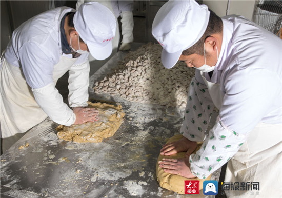
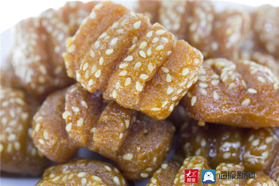

山东省济宁市金乡县红三刀：舌尖上的非物质文化遗产
发布时间: 2023-04-07 4859 次浏览
-
山东省济宁市金乡县的红三刀也叫馃子，一向以质量优良、制作精细、风味独特著称。做红三刀的老字号，以前叫“东长兴”，新中国成立后，金乡县国营的糕点公司金蜂糕点，当时请的就是东长兴的师傅。如今，金蜂糕点已经是一家授牌“中华老字号”的老店了，金乡蜜制红三刀制作技艺也进入市级非物质文化遗产名录。
红三刀，其貌不扬，长方形，比麻将牌略大，比火柴盒略薄，表面缀以芝麻，饰以刀痕。做法呢，说起来容易做起来难，先用面粉、蜂蜜等调和，然后往表面撒上芝麻，在上面用刀连砍数下，再用优质花生油炸透，挂浆晾透。
师傅的手艺、百年的秘方、特殊的工艺、油温的掌控、时机的拿捏，全在意会，不可言传。一般人按步骤如法炮制，炸出来肯定不是“三刀”，而是一种叫不上名堂的东西。
红三刀的包装，从前是先用长方形的纸盒盛好，再用四方的草纸对角折叠包裹，上面覆上红色的果签儿，最后用纸荆子四面缠绕，挤一个结儿。因为走的亲戚多，从前过年，腊月二十六七赶年集时，每家都要买几十斤散装的，回来在灯下自己包。那样的夜晚，闻嗅着三刀的香气，听着折叠纸张轻轻的“啪啪”声，摸着通红光滑的果签儿，欣赏着果签上印刷的图案和字号，感受着浓浓的年味。
红三刀是金乡人逢年过节，走亲串友的必备礼品，如果按照老礼，春节串门，可以不拿烟酒，可以不拿水果，但如果不拿两包红三刀，就跟空手跑一趟似的。如今生活好了，红三刀不再稀罕，也不再是只能在过年的时候吃到的美食。可金乡人过年还是要提上馃子走亲戚，金乡的游子也每每让家人快递些馃子过去，吃上一口，品味乡愁。
黄河文化旅游宣传平台
联系电话: 17753010787
版权所有：山东大学技术团队
技术支持：山东大学技术团队